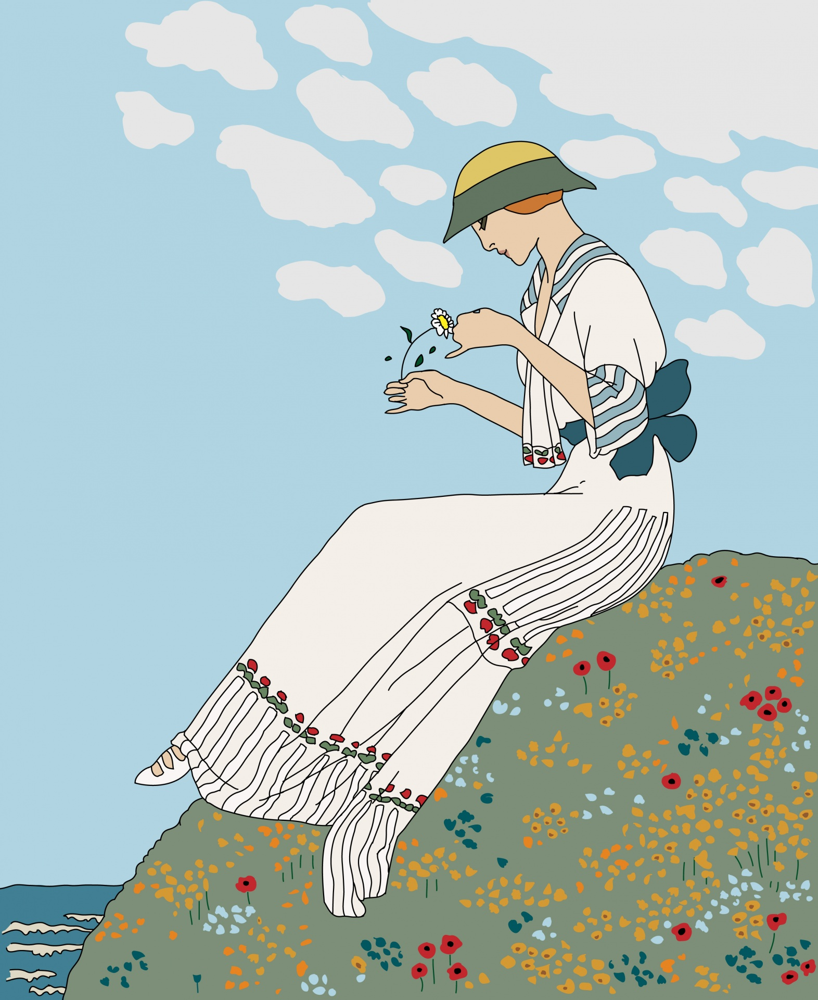
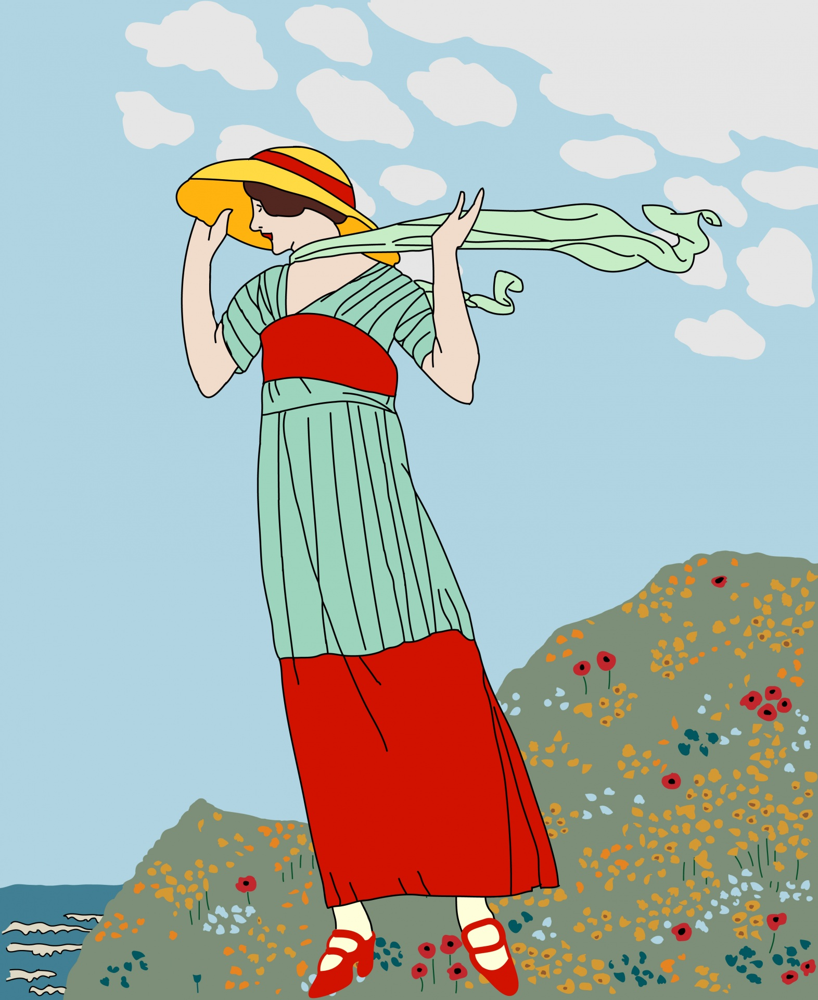
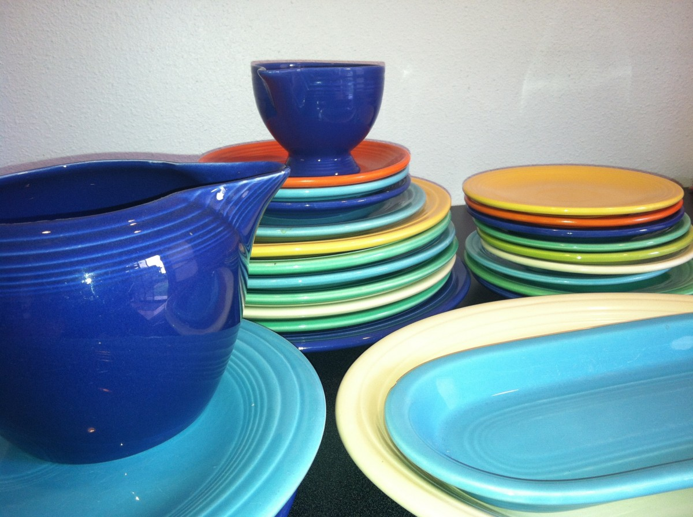
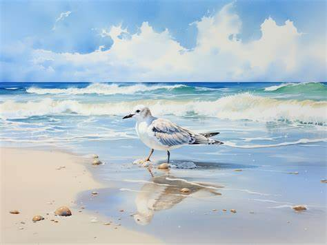
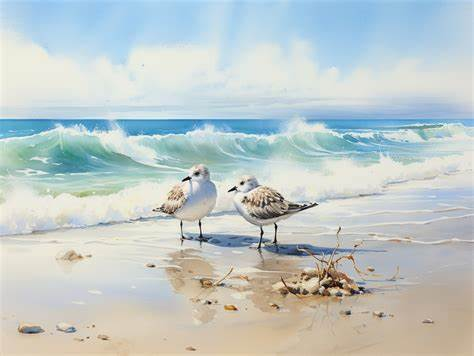
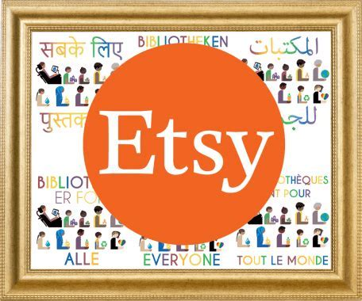

Hobby News and Trends
Hobbies of the Week
| Name | Popularity Level | Price Range | Difficulty |
|---|---|---|---|
| Watercolor | High | Low | Intermediate |
| Crochet | Medium | Low | Beginner |
| Tufting | Low | Medium | Advanced |
| Graphic Design | High | High | Intermediate |
Tutorial of the week
Discover some artists - Artists of the week
Loved a hobby but don't know how to get inspiration ? Here are some pictures of a few artists selected this week !
Sandra Quilcho
Vintage flower Girl

Sandra Quilcho
Woman on the flower hill

Peter Craving
Poterie collection

Emily Peters
Wondering ocean bird

Emily Peters
Lost ocean birds

Choose a New Hobby
You have some recommendations ?
Feel free to fill the form to suggest artists for next week !
Related Websites
Want to get more inpsiration ? Here are some related websites that you can visit.
Pinterest is a popular social media platform that is widely used by artists and art enthusiasts. It serves as a virtual pinboard where users can discover, save, and organize ideas and inspiration for various topics, including art. On Pinterest, users can create boards to categorize and save images, articles, and other content related to art. These boards can be public or private, allowing users to curate their own collections or share them with others.
Etsy is an online marketplace that specializes in handmade, vintage, and unique items. It is a popular platform for artists and artisans to sell their artwork, crafts, and other creative products.